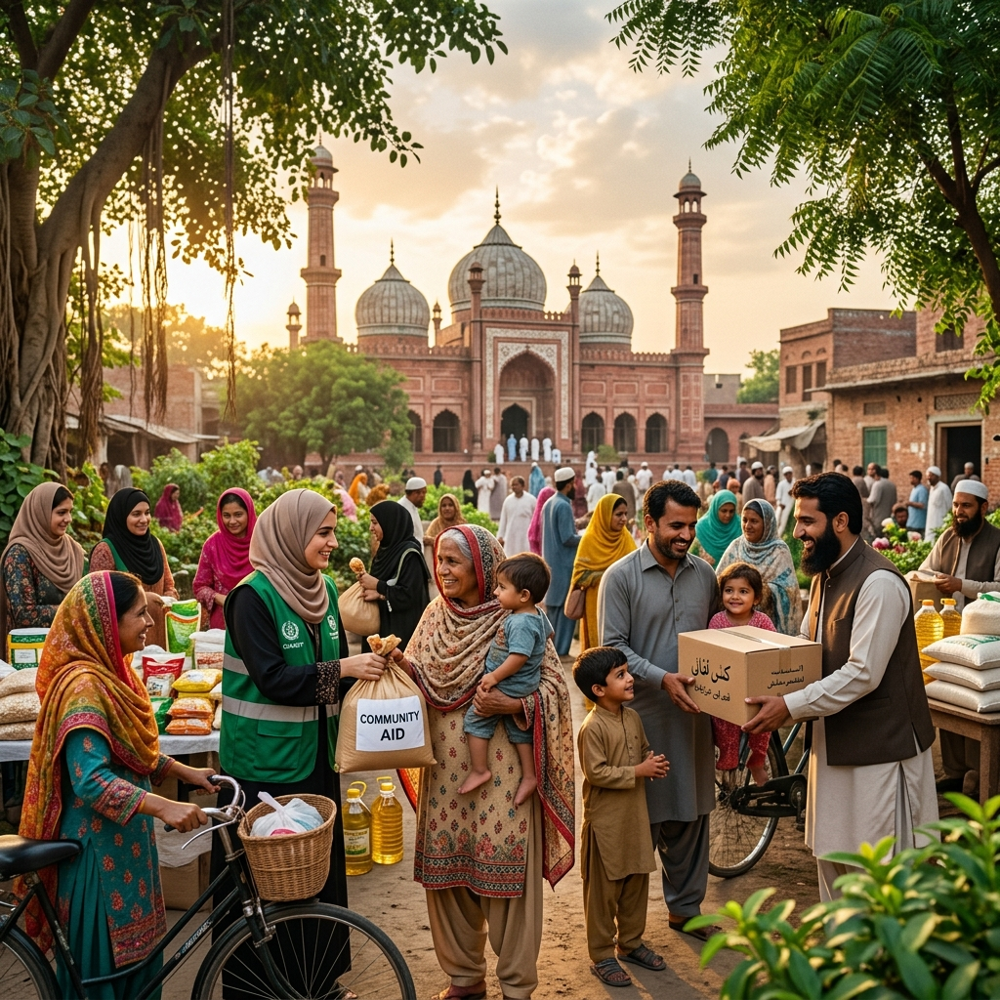
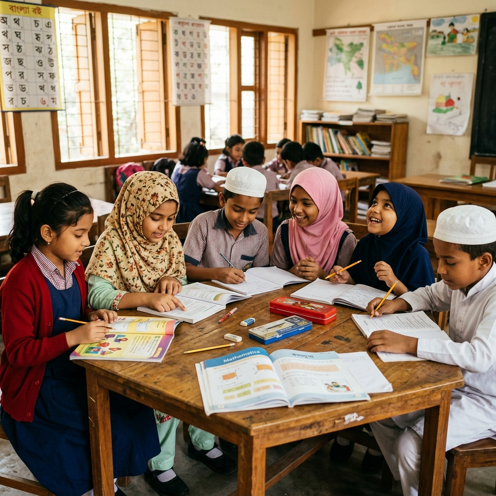

Dua Foundation is a non-political voluntary welfare organization committed to transforming communities through education, healthcare, social justice, and compassionate service in Sylhet, Bangladesh.


Dua Foundation was established with a vision to uplift communities through selfless service and unwavering compassion. As a non-political voluntary welfare organization, we bring together dedicated individuals who believe in turning prayers into tangible action — serving humanity regardless of caste, creed, or background. Our mission spans education, healthcare, cultural preservation, and social justice across Sylhet, Bangladesh.
From community welfare to social justice, our programs are designed to create lasting positive change in the lives of those we serve.
Improving living standards of the underprivileged through food distribution, housing support, and emergency relief programs for families in need.
Organizing Eid celebrations, Milad Mahfil, Seeratunnabi Mahfil, and other Islamic cultural gatherings that strengthen community bonds and spiritual growth.
Providing scholarships and educational materials for poor and deserving students, ensuring that financial barriers never stand in the way of knowledge.
Establishing charitable hospital services, organizing free medical camps, and providing healthcare access to underserved communities throughout Sylhet.
Supporting local farming programs, providing seeds, tools, and training to empower rural communities toward sustainable agriculture and self-sufficiency.
Actively preventing child marriage, campaigning against dowry practices, and advocating for the rights and dignity of every member of our community.
أَرَأَيْتَ ٱلَّذِى يُكَذِّبُ بِٱلدِّينِ فَذَٰلِكَ ٱلَّذِى يَدُعُّ ٱلْيَتِيمَ وَلَا يَحُضُّ عَلَىٰ طَعَامِ ٱلْمِسْكِينِ
"Have you seen the one who denies the Recompense? For that is the one who drives away the orphan, and does not encourage the feeding of the poor."
— Surah Al-Ma'un (107:1-3)Your generous contributions help us continue our mission of serving communities, educating children, and creating a just society. Every donation makes a difference.